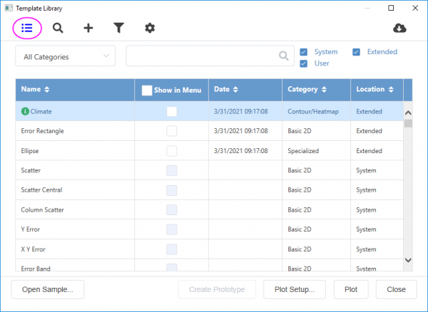

Die Vorlagenbibliothek kann zum Organisieren Ihrer benutzerdefinierten Diagrammvorlagen und mitgelieferten/heruntergeladenen erweiterten Vorlagen und Systemvorlagen und zum Zeichnen in diesen Vorlagen verwendet werden.
Um die Vorlagenbibliothek zu öffnen:
oder
|
Auch wenn alle Systemvorlagen auch in der Vorlagenbibliothek aufgeführt werden können, können Sie einfach über diese Systemvorlagen zeichnen und anzeigen, indem Sie den gewünschten Diagrammtyp im Menü Zeichnen auswählen, der Liste mit über 200 Standarddiagrammtypen. Sie können ein Diagramm auch über eine Systemvorlagen zeichnen, indem Sie auf die Schaltflächen auf den Symbolleisten 2D-Grafiken oder 3D- und Konturdiagramme klicken. |
|
Um zur alten Vorlagenbibliothek zurückzukehren, können Sie die Systemvariable @TLV=0 verwenden. |
Verwenden Sie die Schaltfläche Listenmodus wechseln , um zwischen Vorschau- und Listenmodus umzuschalten. Im Listenmodus werden alle Vorlagen in der Listentabelle aufgeführt.
Wenn Sie existierende Diagrammvorlagen zu Ihrem Anwenderdateiordner bzw. Gruppenordner hinzugefügt haben, können Sie auf die Schaltfläche Vorlage scannen  auf der Symbolleiste der Bibliothek klicken, um sie automatisch zu scannen.
auf der Symbolleiste der Bibliothek klicken, um sie automatisch zu scannen.
Um (a) Vorlagen aus einem anderen Ordner als dem Anwenderdateiordner hinzuzufügen oder (b) Vorlagen, die Sie vorher aus der Vorlagenbibliothek entfernt haben, erneut hinzuzufügen, klicken Sie auf die Schaltfläche Vorlage hinzufügen  auf der Symbolleiste. Wenn ein Vorschaubild der Vorlage existiert, wird es hinzugefügt. Beachten Sie jedoch, dass Vorlagen und Vorschaubilder nicht automatisch in den Anwenderdateiordner kopiert werden.
auf der Symbolleiste. Wenn ein Vorschaubild der Vorlage existiert, wird es hinzugefügt. Beachten Sie jedoch, dass Vorlagen und Vorschaubilder nicht automatisch in den Anwenderdateiordner kopiert werden.
Klicken Sie auf die Schaltfläche Klonbare Vorlagen auflisten , um die Anzeige der Vorlagen in der Bibliothek auf die klonbaren Vorlagen zu begrenzen, die auf die aktive Mappe anwendbar sind.
Klicken Sie auf die Schaltfläche Verwaltungsmodus auf der Symbolleiste, um zur Verwaltungsliste zu wechseln.
Klicken Sie auf die Schaltfläche Vorlagencenter öffnen , um das Vorlagencenter zu öffnen und die Online-Vorlagen herunterzuladen.
Wählen Sie eine Kategorie und geben Sie Stichwörter im Feld Vorlage suchen in der oberen rechten Ecke der Bibliothek ein, um nach Stichwörtern im Namens- oder Beschreibungsteil der Vorlagen in der festgelegten Kategorie zu suchen. Löschen Sie die Stichwörter, um alle Vorlagen wieder anzuzeigen.
Aktivieren Sie das Kontrollkästchen System, Erweitert, Anwender oder Gruppe neben dem Textfeld Suchen, um die Vorlagen zu filtern, die Sie auflisten möchten.
Klicken Sie auf Beispiel öffnen... links unten, um ein mitgeliefertes Diagrammbeispiel, das mit einer ausgewählten Vorlage verbunden ist zu öffnen oder ein Beispielprojekt online im Lernzentrum zu suchen und herunterzuladen.
Wählen Sie eine Anwendervorlage und klicken Sie dann auf die Schaltfläche Öffnen, um diese Vorlagendatei direkt zu öffnen. Systemvorlagen können auf diese Weise nicht geöffnet werden.
Klicken Sie, um eine klonbare Vorlage auszuwählen. Klicken Sie auf die Schaltfläche Prototyp erstellen, um den Prototyp der Arbeitsmappe zu erstellen. Blätter oder Spalten mit dem Kurznamen NotUsed zeigen an, dass das/die aktuelle Arbeitsblatt/Spalte nicht verwendet wird, um die klonbare Vorlage zu erstellen.
Wenn die ausgewählte Vorlage sich für die Daten eignet, klicken Sie doppelt auf die Vorlage oder klicken Sie auf die Schaltfläche Zeichnung, um das Diagramm gemäß der Vorlage zu zeichnen. Die Zeichnung wird erstellt, währenddessen wird die Vorlagenbibliothek geschlossen.
Wenn die ausgewählte Vorlage für die ausgewählten Daten nicht geeignet ist, klicken Sie auf die Schaltfläche Zeichnung oder die Schaltfläche Diagrammeinstellungen, um den Dialog Diagrammeinstellungen zu öffnen. Der Dialog Vorlagenbibliothek bleibt geöffnet, während Sie Ihr Diagramm mit Hilfe der Diagrammeinstellungen erstellen.
Wenn Sie den falschen Fenstertyp für die Quelldaten geöffnet haben (Arbeitsmappe oder Matrixmappe), klicken Sie auf die Schaltfläche Zeichnen und die Vorlage wird direkt geöffnet.
Die Vorlagenbibliothek unterstützt zwei Modi, um alle Vorlagen aufzuführen, die die Bedingungen erfüllen. Innerhalb der Luste können Sie mehrere Operationen mit den aufgeführten Vorlagen durchführen.
Bewegen Sie die Maus über das Vorschausymbol, um die Beschreibung und den Dateipfad der Vorlage als Tooltipp anzuzeigen.
Klicken Sie auf die Sternschaltfläche auf dem Vorlagenvorschausymbol, um diese Vorlage über das Menü Zeichnen > Meine Vorlagen hinzuzufügen oder zu entfernen.
Klicken Sie auf die Schaltfläche Bearbeiten in der oberen rechten Ecke der Vorlagenvorschau, um den Dialog template_modify zu öffnen. Sie können Vorlagenname, Beschreibung, Fensterkurzname/-langname etc. bearbeiten. Bitte beachten Sie, dass es nicht zugelassen ist, die Systemvorlagen/erweiterten Vorlagen zu modifizieren, es sei denn, Sie speichern erneut als Anwendervorlagen.
Klicken Sie auf die Schaltfläche Listenmodus wechseln , um zum Listenmodus zu wechseln.

Klicken Sie auf den Spaltenheader, um die Vorlagen zu sortieren.
Aktivieren Sie die Kontrollkästchen in der Spalte Im Menü zeigen, um zu steuern, welche Vorlagen im Menü Zeichnen > Meine Vorlagen gezeigt werden.
Klicken Sie mit der rechten Maustaste auf die ausgewählte Vorlagenzeile. Sie können Bearbeiten auswählen, um den Dialog template_modify zu öffnen und sie zu modifizieren.
Klicken Sie auf die Schaltfläche Verwaltungsmodus auf der Symbolleiste, um zur Verwaltungsliste zu wechseln.
Im Verwaltungsmodus können sie, ähnlich wie im Listenansichtsmodus oben, die Vorlagen sortieren und entscheiden, welche Vorlagen im Menü Zeichnen > Meine Vorlagen gezeigt werden.
Aktivieren Sie das Kontrollkästchen vor der Spalte Name, um eine oder mehrere Vorlagen auszuwählen, klicken Sie auf die Schaltfläche Kategorie und wählen Sie dann die Zielkategorie in der Auswahlliste. Hinweis: Das Ändern der Kategorie gilt nur für die benutzerdefinierten Vorlagen.
Wählen Sie die Zielvorlage, um auf die Schaltfläche Löschen oder Verbergen zu klicken. Um mehrere Vorlagen auszuwählen, können Sie das Kontrollkästchen in der Auswahlspalte aktivieren (vor der Spalte Name).
Um die Vorlage(n) wieder anzuzeigen, müssen Sie die ausgegraute(n) Vorlage(n) auswählen und auf die Schaltfläche Zeigen unten klicken.
Hinweis:
|
Sie können damit fortfahren, Diagrammvorlagen zu verwenden, die Sie mit früheren Versionen von Origin erstellt haben. Dazu verfahren Sie so wie mit den früheren Versionen:
Klonbare Vorlagen sollen für das "intelligente Zeichnen" von Datenblättern verwendet werden, die immer eine gemeinsame Struktur anzeigen. Hinweis: Um ein Diagramm mit Hilfe einer klonbaren Vorlage zu klonen, müssen Sie als Erstes sicherstellen, dass die neuen Daten dieselbe Struktur haben, wie in der Vorlage gespeichert ist.